Registra automaticamente i pagamenti con Wallet
Con questa automazione, ogni volta che paghi avvicinando una carta o un biglietto salvato in Wallet, il telefono ti propone di registrare la spesa in Skurda, senza aprire l'app a mano.
Guarda il video con tutti i passaggi:
- Apri l'app Comandi Rapidi
- Vai alla scheda Automazioni (in basso)
- Tocca il + in alto a destra
- Cerca e seleziona Wallet come trigger
- Lascia la schermata com'è: tutte le carte monitorate, tutte le categorie selezionate, Filtra esercenti senza filtri (se preferisci seguirne una sola, scegli quella)
- Seleziona Esegui immediatamente
- Lascia disattivata Notifica in caso di esecuzione — o attivala se vuoi vedere quando viene eseguita, ma ti consiglio comunque di toglierla
- Tocca Avanti
- Tocca Crea nuovo comando rapido
- Nella barra "Cerca azioni", digita Skurda
- Seleziona l'azione Registra pagamento
- Comparirà il blocco "Registra Importo pagati a Esercente"
- Tocca il campo Importo: sopra la tastiera comparirà un suggerimento "Input comando rapido" — toccalo per inserirlo
- Fai lo stesso con il campo pagati a: toccalo e poi tocca "Input comando rapido" nel suggerimento sopra la tastiera
- Ora entrambi i campi mostrano il segnaposto generico "Input comando rapido". Tocca il primo (quello dell'Importo) e, dal menu che si apre, seleziona Importo
- Tocca il secondo (quello di pagati a) e seleziona Esercente
- Conferma con il segno di spunta blu in alto a destra
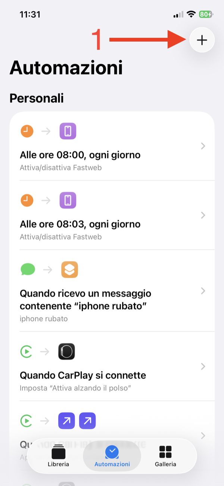
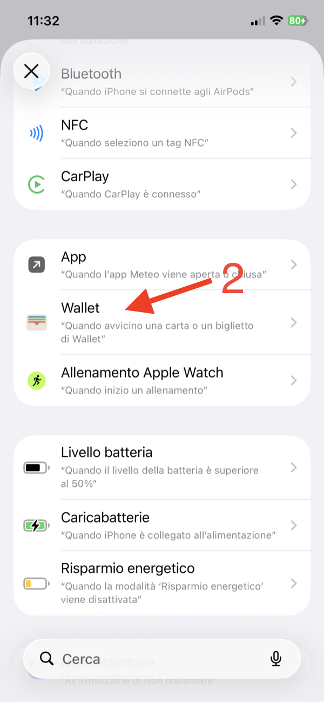
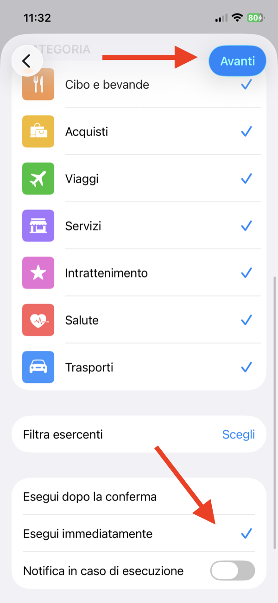
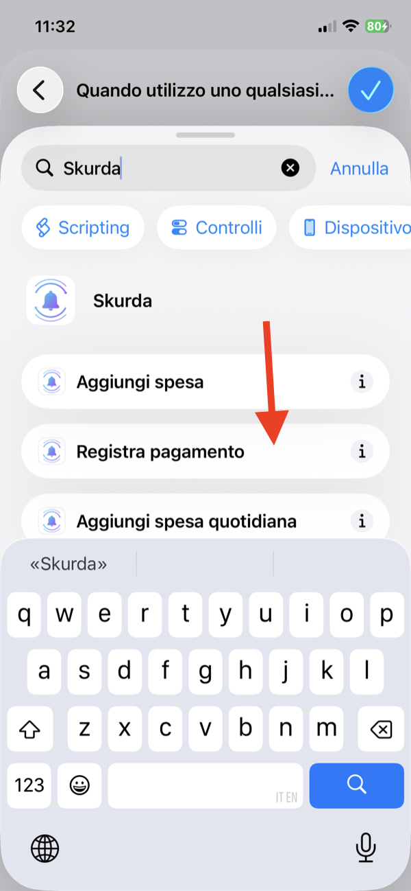
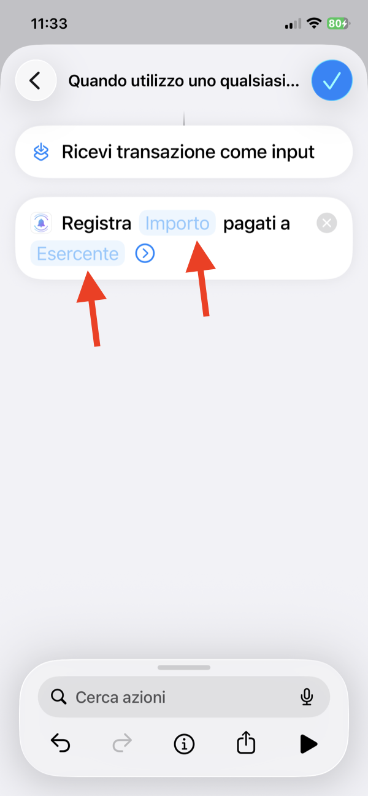
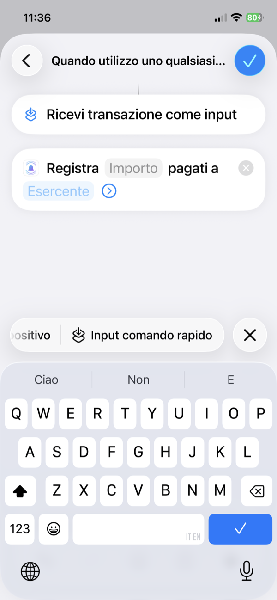
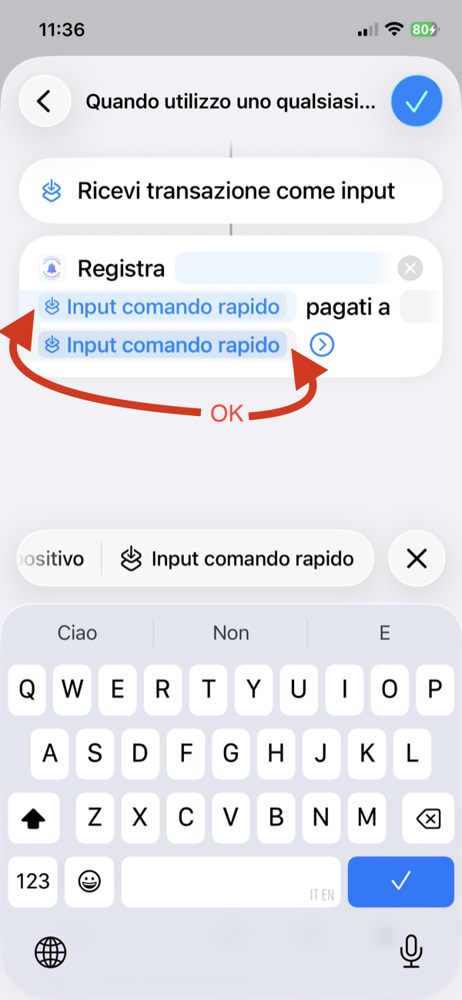
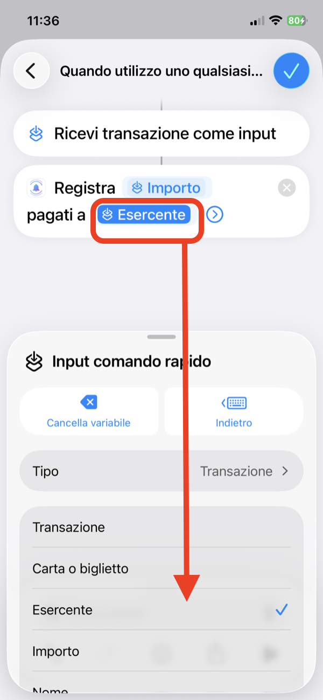
Fatto: da ora ogni pagamento tramite Wallet verrà registrato automaticamente su Skurda.
Se il pagamento corrisponde a una spesa ricorrente che hai già in Skurda, viene spuntata come pagata; se non corrisponde a nessuna, diventa una nuova spesa quotidiana — non va persa.
Preferisci non configurare l'automazione? Puoi comunque registrare un pagamento in un tocco: condividi lo screenshot della notifica di pagamento con Skurda dal foglio "Condividi" di iOS — negozio, importo e data si riconoscono da soli, tu confermi prima di salvare.
Hai avuto difficoltà a configurarla? Scrivici a feedbacksr@icloud.com.
Automatically log payments with Wallet
With this automation, every time you pay by tapping a card or pass saved in Wallet, your phone will prompt you to log the expense in Skurda — no need to open the app manually.
Watch the video walkthrough:
- Open the Shortcuts app
- Go to the Automation tab (bottom)
- Tap the + in the top right
- Search for and select Wallet as the trigger
- Leave the screen as it is: all cards monitored, all categories selected, Filter Merchants with no filter (if you'd rather track just one card, pick that one)
- Select Run Immediately
- Leave Notify When Run turned off — or turn it on if you want to see when it runs, but I'd still recommend leaving it off
- Tap Next
- Tap Create New Shortcut
- In the "Search actions" bar, type Skurda
- Select the Record Payment action
- You'll see the block "Record Amount paid to Merchant"
- Tap the Amount field: a suggestion saying "Shortcut Input" will appear above the keyboard — tap it to insert it
- Do the same for the paid to field: tap it, then tap "Shortcut Input" from the suggestion above the keyboard
- Both fields now show the generic "Shortcut Input" placeholder. Tap the first one (Amount) and, from the menu that opens, select Amount
- Tap the second one (paid to) and select Merchant
- Confirm with the blue checkmark in the top right
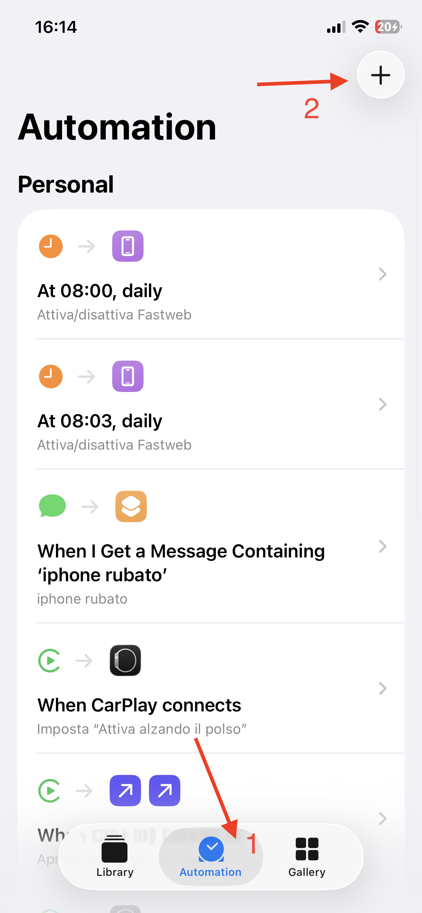
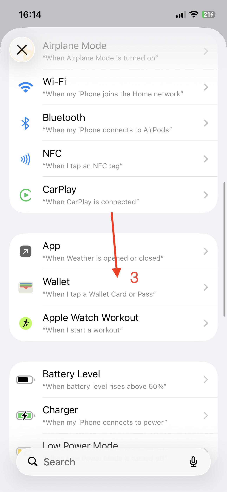
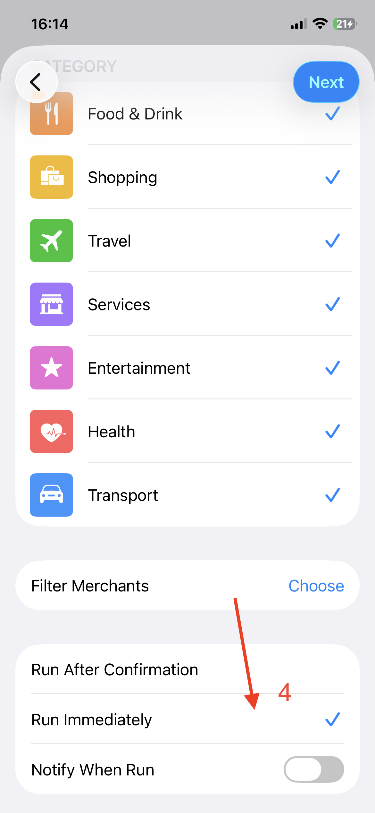
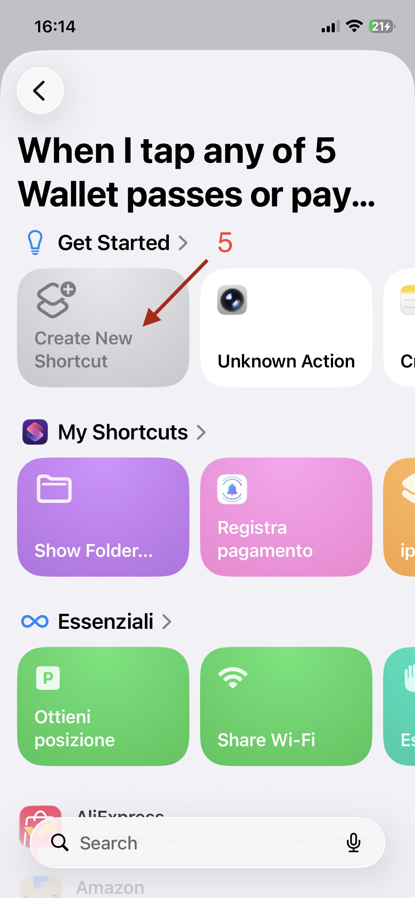
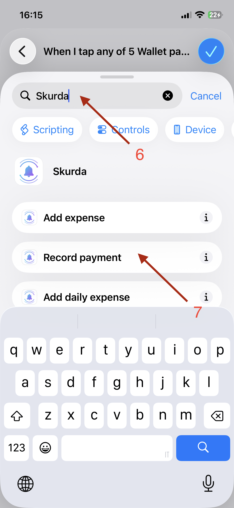
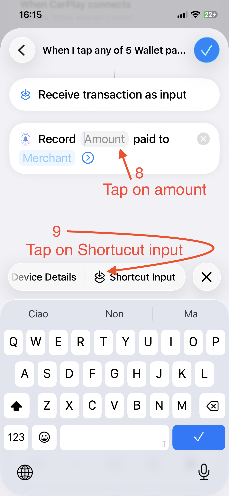
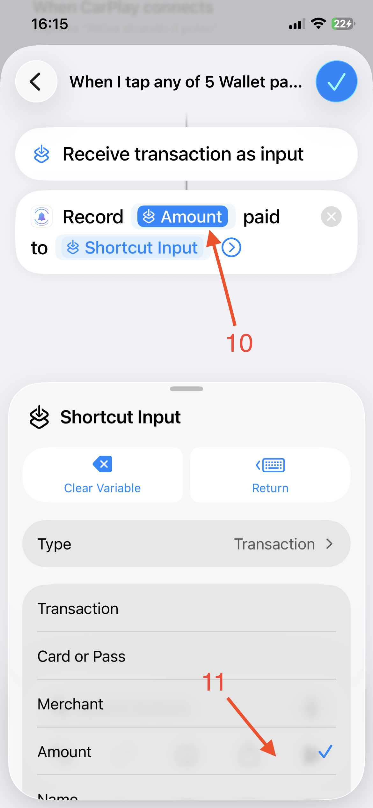
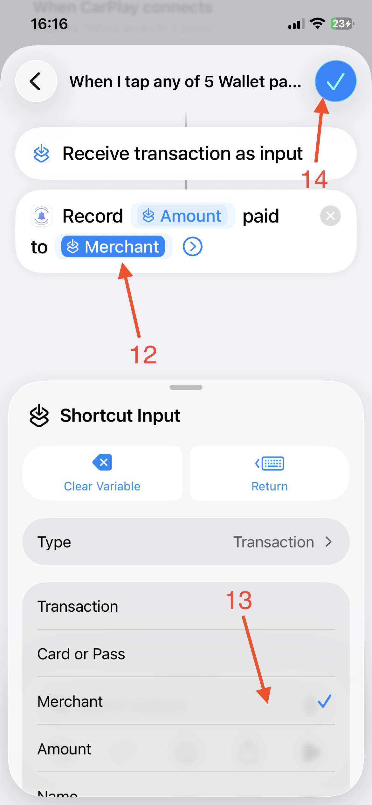
Done: from now on, every Wallet payment will be automatically logged in Skurda.
If the payment matches a recurring expense you already track, Skurda marks it as paid; if it doesn't match any, it becomes a new daily expense instead — nothing gets lost.
Would rather not set up the automation? You can still log a payment with a single tap: share the payment notification's screenshot with Skurda from iOS's "Share" sheet — merchant, amount and date are recognised on their own, and you confirm before anything is saved.
Having trouble setting it up? Email us at feedbacksr@icloud.com.
Registra automáticamente los pagos con Wallet
Con esta automatización, cada vez que pagues acercando una tarjeta o un pase guardado en Wallet, tu teléfono te propondrá registrar el gasto en Skurda, sin necesidad de abrir la app manualmente.
Mira el vídeo con todos los pasos:
- Abre la app Atajos
- Ve a la pestaña Automatización (abajo)
- Toca el + en la parte superior derecha
- Busca y selecciona Wallet como disparador
- Deja la pantalla como está: todas las tarjetas monitorizadas, todas las categorías seleccionadas, Filtrar comercios sin filtros (si prefieres seguir solo una tarjeta, elige esa)
- Selecciona Ejecutar inmediatamente
- Deja desactivado Notificar en caso de ejecución — o actívalo si quieres ver cuándo se ejecuta, pero de todos modos te recomiendo desactivarlo
- Toca Siguiente
- Toca Crear nuevo atajo
- En la barra "Buscar acciones", escribe Skurda
- Selecciona la acción Registrar pago
- Aparecerá el bloque "Registrar Importe pagado a Comercio"
- Toca el campo Importe: encima del teclado aparecerá una sugerencia "Entrada de acceso directo" — tócala para insertarla
- Haz lo mismo con el campo pagado a: tócalo y luego toca "Entrada de acceso directo" en la sugerencia sobre el teclado
- Ambos campos mostrarán ahora el marcador genérico "Entrada de acceso directo". Toca el primero (Importe) y, en el menú que se abre, selecciona Importe
- Toca el segundo (pagado a) y selecciona Comercio
- Confirma con la marca de verificación azul en la parte superior derecha
Listo: a partir de ahora, cada pago mediante Wallet se registrará automáticamente en Skurda.
Si el pago coincide con un gasto recurrente que ya tienes en Skurda, se marca como pagado; si no coincide con ninguno, se convierte en un nuevo gasto del día a día — no se pierde nada.
¿Prefieres no configurar la automatización? Puedes registrar un pago igualmente con un toque: comparte la captura de la notificación de pago con Skurda desde el panel "Compartir" de iOS — comercio, importe y fecha se reconocen solos, y confirmas antes de guardar nada.
¿Tuviste dificultades para configurarla? Escríbenos a feedbacksr@icloud.com.
Enregistrez automatiquement les paiements avec Wallet
Avec cette automatisation, chaque fois que vous payez en approchant une carte ou un billet enregistré dans Wallet, votre téléphone vous proposera d'enregistrer la dépense dans Skurda, sans avoir à ouvrir l'application manuellement.
Regardez la vidéo avec toutes les étapes :
- Ouvrez l'application Raccourcis
- Allez dans l'onglet Automatisation (en bas)
- Appuyez sur le + en haut à droite
- Recherchez et sélectionnez Wallet comme déclencheur
- Laissez l'écran tel quel : toutes les cartes surveillées, toutes les catégories sélectionnées, Filtrer les marchands sans filtre (si vous préférez ne suivre qu'une seule carte, choisissez-la)
- Sélectionnez Exécuter immédiatement
- Laissez Notifier en cas d'exécution désactivé — ou activez-le si vous voulez voir quand elle s'exécute, mais je vous conseille quand même de le désactiver
- Appuyez sur Suivant
- Appuyez sur Créer un nouveau raccourci
- Dans la barre "Rechercher des actions", tapez Skurda
- Sélectionnez l'action Enregistrer un paiement
- Le bloc "Enregistrer Montant payé à Marchand" apparaît
- Touchez le champ Montant : une suggestion "Entrée du raccourci" apparaîtra au-dessus du clavier — touchez-la pour l'insérer
- Faites de même pour le champ payé à : touchez-le, puis touchez "Entrée du raccourci" dans la suggestion au-dessus du clavier
- Les deux champs affichent maintenant le terme générique "Entrée du raccourci". Touchez le premier (Montant) et, dans le menu qui s'ouvre, sélectionnez Montant
- Touchez le second (payé à) et sélectionnez Marchand
- Confirmez avec la coche bleue en haut à droite
Terminé : désormais, chaque paiement via Wallet sera automatiquement enregistré dans Skurda.
Si le paiement correspond à une dépense récurrente déjà suivie dans Skurda, elle est marquée comme payée ; sinon, il devient une nouvelle dépense quotidienne — rien n'est perdu.
Vous préférez ne pas configurer l'automatisation ? Vous pouvez tout de même enregistrer un paiement en un geste : partagez la capture de la notification de paiement avec Skurda depuis le panneau « Partager » d'iOS — commerçant, montant et date sont reconnus seuls, et vous confirmez avant tout enregistrement.
Des difficultés à la configurer ? Écrivez-nous à feedbacksr@icloud.com.
Wallet-Zahlungen automatisch erfassen
Mit dieser Automation schlägt dir dein Handy bei jeder Zahlung mit einer in Wallet gespeicherten Karte oder einem Pass vor, die Ausgabe in Skurda zu erfassen — ohne die App manuell öffnen zu müssen.
Schau dir das Video mit allen Schritten an:
- Öffne die App Kurzbefehle
- Gehe zum Tab Automation (unten)
- Tippe oben rechts auf das +
- Suche Wallet und wähle es als Auslöser
- Lass den Bildschirm, wie er ist: alle Karten überwacht, alle Kategorien ausgewählt, Händler filtern ohne Filter (wenn du lieber nur eine Karte verfolgen möchtest, wähle diese aus)
- Wähle Sofort ausführen
- Lasse Bei Ausführung benachrichtigen deaktiviert — oder aktiviere es, wenn du sehen möchtest, wann sie ausgeführt wird, aber ich empfehle dir trotzdem, es zu deaktivieren
- Tippe auf Weiter
- Tippe auf Neuen Kurzbefehl erstellen
- Gib in der Leiste "Aktionen suchen" Skurda ein
- Wähle die Aktion Zahlung erfassen
- Der Block "Betrag bezahlt an Händler erfassen" erscheint
- Tippe auf das Feld Betrag: über der Tastatur erscheint ein Vorschlag "Kurzbefehl-Eingabe" — tippe darauf, um ihn einzufügen
- Mach dasselbe mit dem Feld bezahlt an: tippe darauf und dann auf "Kurzbefehl-Eingabe" im Vorschlag über der Tastatur
- Beide Felder zeigen jetzt den allgemeinen Platzhalter "Kurzbefehl-Eingabe". Tippe auf den ersten (Betrag) und wähle im sich öffnenden Menü Betrag
- Tippe auf den zweiten (bezahlt an) und wähle Händler
- Bestätige mit dem blauen Häkchen oben rechts
Fertig: Ab jetzt wird jede Wallet-Zahlung automatisch in Skurda erfasst.
Passt die Zahlung zu einer bereits erfassten wiederkehrenden Ausgabe, wird sie als bezahlt markiert; passt sie zu keiner, wird daraus eine neue Alltagsausgabe — nichts geht verloren.
Lieber keine Automatisierung einrichten? Du kannst eine Zahlung trotzdem mit einem Tipp erfassen: Teile den Screenshot der Zahlungsbenachrichtigung mit Skurda über das „Teilen"-Menü von iOS — Geschäft, Betrag und Datum werden von selbst erkannt, und du bestätigst, bevor irgendetwas gespeichert wird.
Hattest du Schwierigkeiten bei der Einrichtung? Schreib uns an feedbacksr@icloud.com.